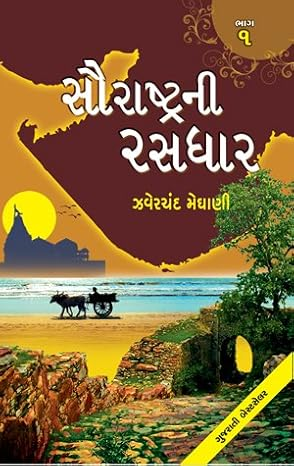
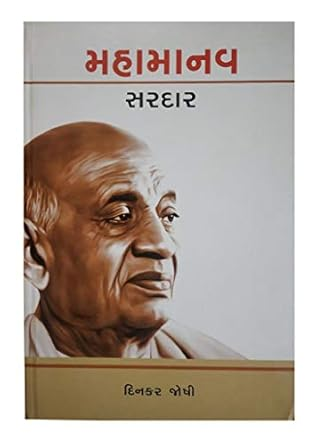
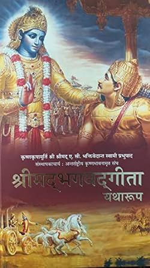

My Favorite Books
| Id | Title | Author | Description | Status | Amount |
|---|---|---|---|---|---|
| 1 | Think Like A Monk | Steve Cavanagh | Two sisters – Alexandra and Sofia Avellino – have just found their father's mutilated body, but each believes the other is to blame for his murder. | Complete |
$20.00 |
| 2 | FIFTY-FIFTY | Steve Cavanagh | Two sisters – Alexandra and Sofia Avellino – have just found their father's mutilated body, but each believes the other is to blame for his murder. | Pending |
$13.66 |
| 3 | સૌરાષ્ટ્રની રસધાર | Zaverchand Meghani | લોક સાહિત્યનો અભૂતપૂર્વ ખજાનો છે. ગુજરાતી સાહિત્ય એનાથી વિખ્યાત અને પ્રેરિત થયું છે. આ કથાઓ લખવા માટે તેઓ સૌરાષ્ટ્રનાં ગમે ગામ ફર્યા હતા.સૌરાષ્ટ્રનીજ ભાષામાં લખાએલી વાર્તાઓ સૌરાષ્ટ્રની ધરતીની શાન છે જે સૌરાષ્ટ્રની રસધાર નામને સંપૂર્ણ ન્યાય આપે છે | Complete |
$30.25 |
| 4 | On the Road with Sam and Dean Winchester | Nicholas Knight | Filled with interviews with the cast and crew of the hit show, stunning behind-the-scenes-imagery and art, and a wealth of thrilling removable items, this updated version includes new chapters on seasons 8 and 9 and a preview of the upcoming season 10. | Complete |
$35.25 |
| 5 | The Killer Book of True Crime | Tom Philbin, Michael Philbin | the ultimate collection of in-depth stories, trivia, quizzes, quotes and photos gruesome and interesting enough to make any crime buff shudder in horrified delight. Discover all the odd and intriguing facts and tidbits you've never heard | Pending |
$22.78 |
| 6 | Mahamanav Sardar | Dinkar Joshi | Biographic Novel on Iron Man of India Sardar Vallabhbhai Patel who played a pivotal role in India's struggle of Independence & guided its integration into a united,independent nation. | Pending |
$15.00 |
| 7 | Shrimad Bhagwat Geeta | A.C. Bhaktivendanta Swami Prabhupada | The Bhagavad Gita, often referred to as the Gita, is a Hindu scripture, dated to the second or first century BCE, which forms part of the Epic Mahabharata. It is a synthesis of Brahmanical and non-Brahmanical traditions; | Complete |
$25.00 |